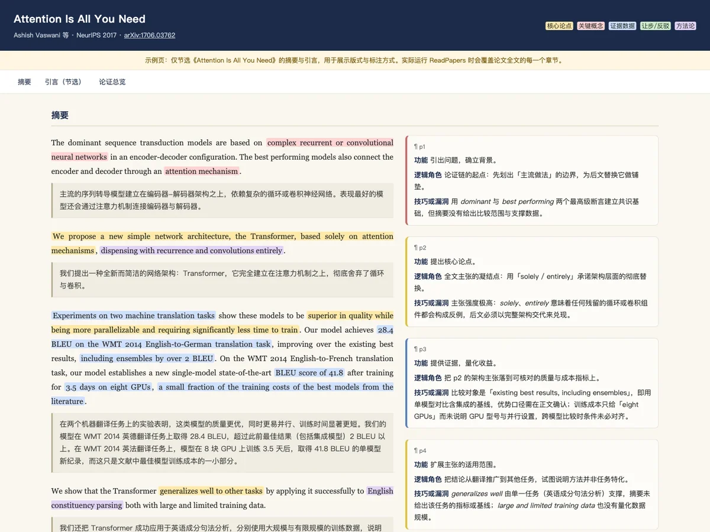
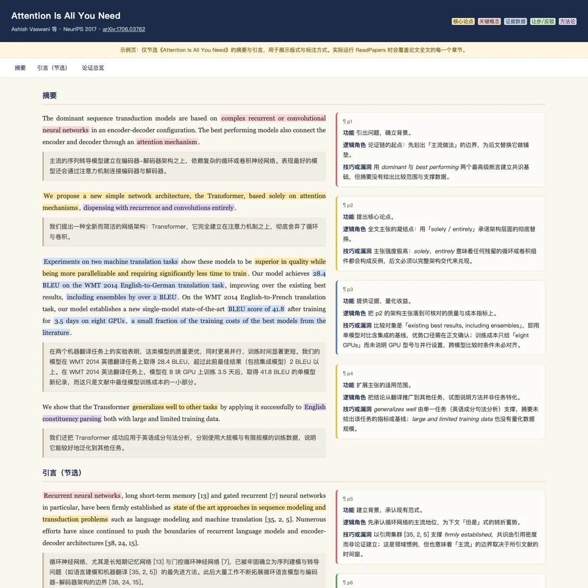
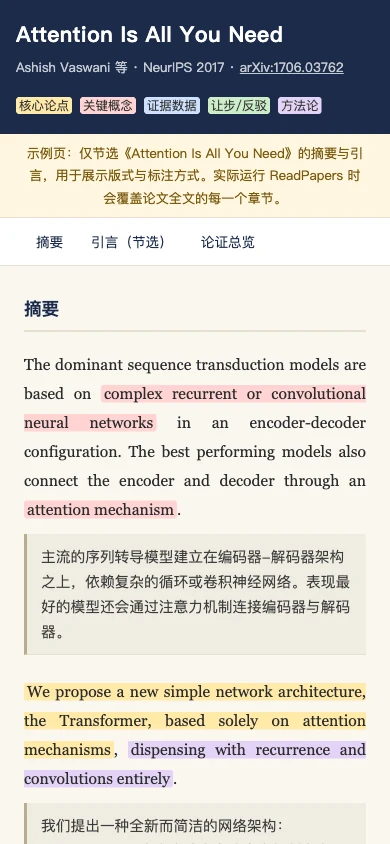
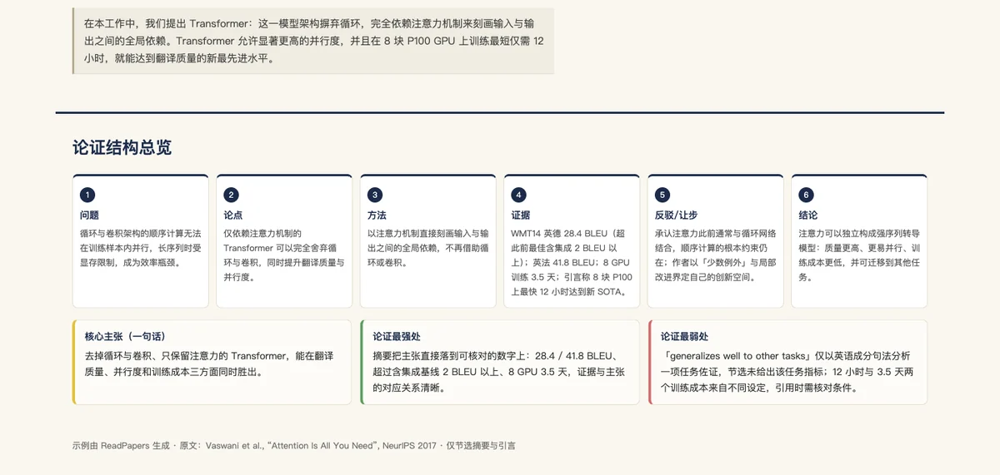

读论证，不读摘要。 Read the argument.Not the summary.
把论文 PDF 变成英中双栏、五色标注、逐段批注的单文件网页。 Turn a paper PDF into a bilingual, five-color annotated reading page.

摘要把论证压平第二次。 A summary flattens the argument twice.
它告诉你论文说了什么，却没有告诉你论文如何说服你。 It tells you what the paper says. It does not tell you how the paper convinces you.
The dominant sequence transduction models are based on complex recurrent or convolutional neural networks in an encoder-decoder configuration. ... We propose a new simple network architecture, the Transformer, based solely on attention mechanisms, dispensing with recurrence and convolutions entirely.
论文提出 Transformer，一种仅依赖注意力机制的架构。
The paper proposes the Transformer, an architecture built solely on attention.
信息正确，但论证消失了。Accurate, but the argument is gone.
The dominant sequence transduction models are based on complex recurrent or convolutional neural networks in an encoder-decoder configuration. ... We propose a new simple network architecture, the Transformer, based solely on attention mechanisms, dispensing with recurrence and convolutions entirely.
五色不是装饰，是论证分类。 Five colors are a classification, not decoration.
每一句关键内容都要回答一个问题：它在论证里干什么？ Every key sentence has to answer one question: what is it doing in the argument?
当前：全部维度 Showing: all dimensions
The dominant sequence transduction models are based on complex recurrent or convolutional neural networks in an encoder-decoder configuration. … We propose a new simple network architecture, the Transformer, based solely on attention mechanisms, dispensing with recurrence and convolutions entirely. … Our model achieves 28.4 BLEU on the WMT 2014 English-to-German translation task, improving over the existing best results, including ensembles by over 2 BLEU.
引言Introduction
In all but a few cases [27], however, such attention mechanisms are used in conjunction with a recurrent network.
从 PDF 到可归档的阅读页。 From PDF to an archival reading page.
读全文、分章节、逐段标注、交付前核对。长文不会被偷偷截断。 Read every page, split by chapter, annotate paragraph by paragraph, verify before delivery. Long papers are never silently truncated.
-
read
读全文Read every page
逐页读取 PDF；扫描版没有文本层时先提示 OCR。Reads each page. Scanned PDFs without a text layer are flagged for OCR first.
-
outline
分章节Split by chapter
长文先展示完整目录，再按章节分批生成。Long papers show the full outline before batch generation.
-
annotate
逐段标注Annotate each paragraph
英文原文五色标注，中文意译在下方，批注在右栏。Five colors on the English, translation below, notes beside.
-
verify
交付前核对Verify before delivery
引文逐字核对，批评必须落到具体句子或数字。Quotes checked verbatim. Every critique points to a specific line or number.
看一页真实的产出。 See a real output.
桌面双栏，移动端单栏。底部有整篇论文的论证骨架。 Two columns on desktop, one on mobile. The argument skeleton sits at the bottom.



一条命令安装。 Install with one command.
把仓库放进 Claude Code 的技能目录，重启会话即可。 Clone it into the Claude Code skills directory and restart the session.
然后说：用 ReadPapers 把这篇 PDF 做成批注网页。 Then say: Use ReadPapers on this PDF.
- MIT开源许可License
- 0外部依赖Dependencies
- PDF本地文件、Zotero 或粘贴文本Local file, Zotero, or pasted text
- HTML单文件，离线可开Single file, opens offline
$ git clone https://github.com/tsingke/ReadPapers.git ~/.claude/skills/ReadPapers需要已安装 Claude Code。克隆后重启会话，技能会自动加载。Requires Claude Code. Restart the session after cloning and the skill loads automatically.